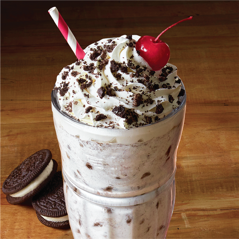
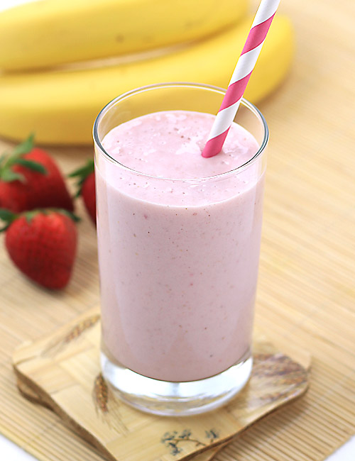
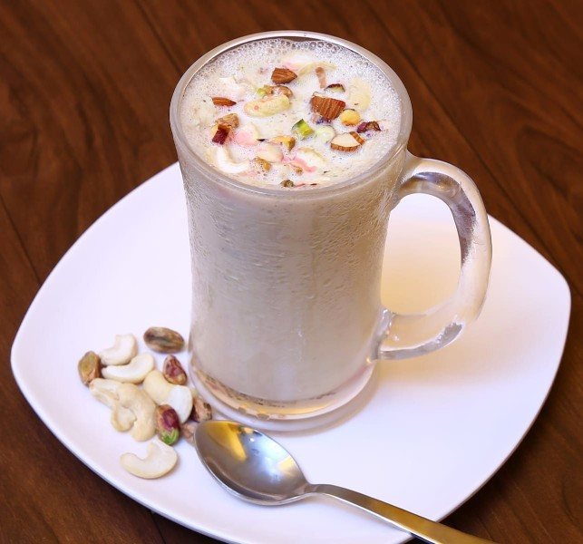

Delicious milo milkshake which taste so yummy and very refreshing. This is a great way to make kids drink milk. It is a drink that
is traditionally made by blending cow's milk, ice cream, and flavorings or sweeteners such as butterscotch, caramel sauce, chocolate syrup, fruit syrup, or whole fruit into a thick, sweet, cold mixture.

Oreo Dream $11.99
This recipe is super kid-friendly, easy to make, and delicious. A favorite for kids' 'How To' speeches or just to enjoy
on a hot day. This sweet treat is a chocolate lover's dream! Best eaten with a spoon and straw. If you prefer a thicker consistency, add more ice cream and less milk. Enjoy!

Strawberry Banana Milkshake $8.99
Shakes are a summertime staple around here but with sweet, spring strawberries hitting the stores we think it’s high time to take an early plunge
into shake making. Oh, that poor dog in a dress.

Dry Fruit Milkshake $7.99
It is an ideal drink for growing up kids or for people looking for energy drinks. This dry fruits milkshake is very filling and you might like to skip a meal after having it.
I have used soy milk instead of regular milk to make it. You can use regular milk or also make with almond milk.